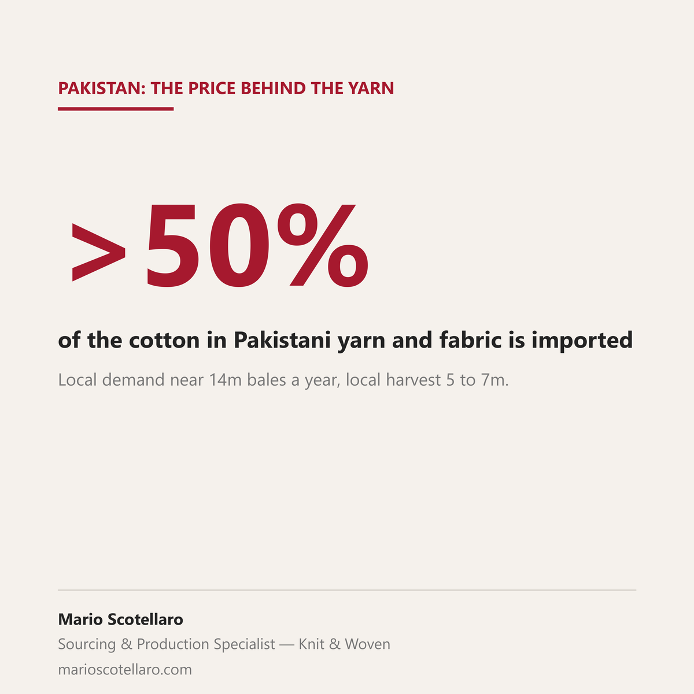

Pakistan's Weekly Cotton Review this week reads as a calm market: local spot rate steady at Rs 19,400 per maund, New York futures moving in an 82 to 89 cent range. Steady is doing a lot of work in that sentence, though.
Domestic mill demand for cotton in Pakistan runs close to 14 million bales a year. This season's local production is estimated at somewhere between 5 and 7 million bales, depending on the source. By either number, more than half of the cotton going into Pakistani yarn and fabric is imported, not grown at home. That gap has widened over the years: national output was above 14 million bales in the mid 2000s and has fallen since, as land in the main growing belts has moved toward other crops and yields have come under more pressure from heat and irregular rainfall.
What that means in practice: when a Pakistan yarn price moves, it is usually the New York future, or an equivalent import benchmark, doing the moving, not the local crop report.
That is worth knowing on both sides of a negotiation. A buyer pricing a Pakistan-origin program is really pricing against a global commodity, the same one every other cotton-importing country is watching. A mill quoting that program is working from the same benchmark, whatever the domestic season looks like. The conversation about price goes better when both sides start from that number instead of one side assuming "local cotton" means insulated from the world market.
Sources: Business Recorder, Weekly Cotton Review, 14 September 2026 · ProPakistani, 18 May 2026 · Dawn, 22 June 2026 · The Friday Times, 13 September 2026